Инструменты и холст
Новое: сетки deform, формы контура, ключи появления и общий кадр.
Всё, что можно делать мышью: рисовать фигуры, ставить точки пером, писать текст, выделять, выравнивать и склеивать объекты.
Панель инструментов
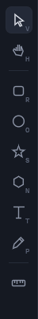
| Клавиша | Инструмент |
|---|---|
| V | Выделение: клик выбирает объект, перетаскивание двигает его. |
| H | Рука: двигает холст. То же самое делает зажатый пробел. |
| R O S N | Прямоугольник, эллипс, звезда, многоугольник. Протяните по холсту, и фигура появится. |
| T | Текст: клик по холсту ставит надпись. |
| P | Перо: свой контур из точек и кривых. |
| B | Кость: тяните от сустава к кончику, следующая протяжка продолжает цепочку. См. «Кости и IK». |
| линейка | Нижняя кнопка: шаг сдвига, размера и поворота, сетка и направляющие. |
Новая фигура сразу попадает в скрипт отдельной строкой, перед блоками анимации. Удалить выбранный объект можно клавишей Delete, вместе с ним уйдут и его ключи.
Выделение, размер и поворот
У выбранного объекта есть рамка с ручками. Квадраты по углам меняют оба размера, кружки на серединах сторон — один. Кружок над рамкой поворачивает. Когда курсор над ручкой поворота, он становится круговой стрелкой.
- Противоположная сторона стоит на месте. Тянете правую ручку — левый край не двигается; тянете угол — на месте остаётся противоположный угол. Так работает и повёрнутый объект, и объект в отражённой группе.
- Alt на ручке размера растягивает рамку от середины, в обе стороны сразу. На ручке Alt не двигает холст.
- Shift при изменении размера сохраняет пропорции (у боковой ручки второй размер растёт от середины), а при повороте даёт шаг 15°.
- Несколько объектов. Когда выделено два объекта и больше, рамка обводит их все. Ручки размера растягивают объекты вместе и раздвигают их, кружок поворачивает всё вокруг середины рамки. Это один шаг отмены.
- Группа. Рамка группы обводит всё, что в ней лежит, вместе с вложенными группами. Поэтому копию символа, детали которого стоят в раскладке
stack, тоже берут за рамку. Скрытые детали в рамку не входят, пока в группе видно что-то ещё: лента, которую показывает один вариант, не раздувает рамку остальных копий. - Что записывается. Прямоугольник, эллипс, звезда и многоугольник меняют
size: обводка и скругление остаются прежними. Группа, контур и текст меняютscale, обводка масштабируется вместе с ними. Повёрнутый объект в общей рамке, которую тянут в одну сторону, получает ещё иskew: он встаёт ровно так, как его показывает растянутая рамка. С Shift наклона не бывает. - Ручки размера прилипают к краям, центрам, узлам и направляющим; Ctrl отключает привязку. Пока ручку тянут, у курсора и внизу окна видно размер или масштаб в процентах.
- Опорная точка. Кружок с крестиком внутри рамки — точка, вокруг которой объект поворачивается и масштабируется (
pivot). Обычно она закреплена, чтобы не мешать брать объект за середину. Нажмите Y или поставьте галочку «Двигать ось на холсте» в свойствах объекта (рядом с полями «Ось X» и «Ось Y»): точка подсветится, и её можно перетащить мышью. Объект на экране при этом не сдвинется, изменится только точка. Она прилипает к девяти точкам рамки (углы, середины сторон, центр), к узлам и направляющим; Ctrl ставит свободно. Двойной клик по точке возвращает её в центр. Точка, поставленная на угол, берётся мышью раньше ручки размера под ней. Опорная точка — часть рисунка: её переносят в «Рисовании» или когда клип не выбран, ключей у неё нет. Ещё раз Y закрепляет точку обратно. - Стрелки двигают объект на 1, со Shift — на 10.
- Пока вы тянете объект, меняется только картинка. В скрипт и в историю отмены правка попадает одним шагом, когда вы отпускаете кнопку мыши.
Несколько объектов, выравнивание и булевы операции
Shift+клик добавляет объект к выделению, а рамка, протянутая с пустого места, выделяет объекты под ней. Выделенные объекты двигаются вместе, а панель справа предлагает выравнивание, распределение с равными промежутками и булевы операции.
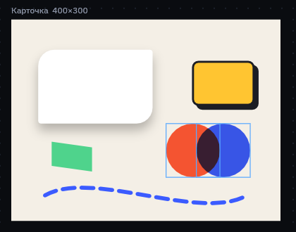
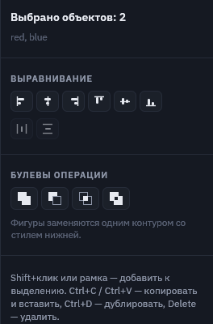
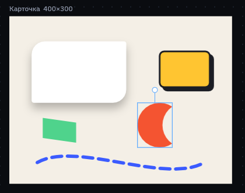
| Операция | Что получится |
|---|---|
| Объединить | Один контур по внешнему краю всех фигур. |
| Вычесть | Нижняя фигура минус все, что лежат выше неё. |
| Пересечь | Только та часть, где фигуры перекрываются. |
| Исключить | Всё, кроме перекрытий: на месте пересечений получаются дырки. |
Кнопка собирает выделенные фигуры в группу с живой операцией: фигуры остаются, а рисуется один контур со стилем нижней. Alt+щелчок по кнопке работает по-старому: фигуры сразу заменяются одним объектом path, исходные удаляются. Текст тоже можно склеивать с фигурами; кнопка «В кривые» у текста превращает буквы в контуры сразу.
Живые операции
Живая операция не выполняется раз и навсегда, а записывается в файл: слово combine у группы складывает её фигуры в один контур при каждом показе, а сами фигуры остаются. Их можно двигать, менять и анимировать — контур идёт следом.
- Создать. Выделите две фигуры или больше и нажмите кнопку операции в панели справа. Появится группа, она же будет выделена. Всё остаётся на своих местах, отмена — один шаг Ctrl+Z.
- Править фигуры. Щёлкните фигуру на холсте или в слоях и двигайте, растягивайте, поворачивайте, правьте точки как обычно. Щелчок в вырезе попадает в ту фигуру, которая вырезает. Пока выбрана группа или любая её фигура, все фигуры операции обведены пунктиром по своей форме. Рамка нижней фигуры стоит по её собственному контуру, рамка группы — по результату.
- Сменить операцию. У группы в свойствах есть раздел «Живая операция» с теми же четырьмя кнопками; текущая подсвечена. Там же написано, какая фигура рисует результат. Эти кнопки есть и у обычной группы: так операция включается для уже собранной группы.
- У фигуры операции тот же раздел говорит, что она делает: рисует результат или только задаёт форму. Кнопка «К операции» выбирает группу.
- «Обычная группа» снимает операцию: каждая фигура снова рисует себя.
- «Разобрать в контур» заменяет группу одним контуром с тем же видом. Контур получает id, имя, место и ключи группы и краску нижней фигуры. Motif откажет и скажет почему, если что-то пропало бы: фигура операции двигается в клипе или пружиной, у фигур есть свои ключи, к ним привязан слушатель машины.
- Для игры. Окно «Для игры» предупреждает об операциях, которые считаются заново на каждом кадре, и называет фигуру, которая их двигает.
В скрипте операция выглядит так:
group moon at 110 110 combine subtract {
ellipse disc size 120 120 fill #ffd166 stroke #1b2a41 4
ellipse shade at 34 -10 size 110 110
}| Слово | Что получится |
|---|---|
combine union | Один контур по внешнему краю всех фигур. |
combine subtract | Первая (нижняя) фигура минус все остальные. |
combine intersect | Только общая часть всех фигур. |
combine exclude | Перекрытия становятся дырками. |
- Чем рисуется. Результат рисует первая фигура группы: её заливка, обводка, тень и эффекты. Остальные фигуры только задают форму, их краска не видна. Картинка та же, что после обычной кнопки «Вычесть» с теми же фигурами.
- Что участвует. Все видимые фигуры группы, в том числе во вложенных группах, с их местом, поворотом, масштабом и изгибом костями. Текст участвует своими буквами. Скрытая фигура выпадает из операции. Если в группе осталась одна фигура или группа скрыта, ничего не меняется.
- Операция в операции. Вложенная группа со своим
combineсчитается первой и входит во внешнюю готовым контуром: так из пластины вычитается скважина, сложенная из круга и стержня. - Анимация. Ключи, параметры персонажа, кости и пружины у фигур операции работают как обычно. Пока фигуры стоят, контур считается один раз. Пока хотя бы одна движется относительно других, он считается заново на каждом кадре: это дороже обычной фигуры, поэтому десятки таких операций в одной сцене для игры — много. Движение всей группы целиком ничего не стоит.
- Чего нельзя. У одной группы не бывает сразу
clipиcombine. Внутри операции не бывает мягких тел, верёвок, жидкости, частиц и объёмных тел (extrude): их форму считает не контур, и Motif скажет об этом в ошибке. - Крайние случаи. Фигуры, которые только касаются или лежат край в край, не оставляют волосков. Если от фигуры ничего не осталось (вычли её копию), не рисуется ничего. Открытая линия участвует как замкнутая область.
- В игре. Рантайм считает операцию так же, как редактор и
motif render. Указатель мыши проходит сквозь вырез: слушательlistenна такой группе видит результат, а не исходные фигуры.
Пример: live-booleans.msc — луна, облако, лист, кольца, замок со скважиной и шестерня; в клипе Idle тень ползёт по луне.
Ctrl+C и Ctrl+V копируют и вставляют. В буфер попадает текст скрипта, поэтому объекты можно переносить между сценами и даже вставлять в текстовый редактор. Ctrl+D дублирует, Ctrl+A выделяет всё.
Группы и порядок
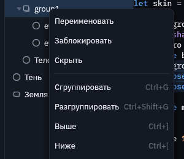
Ctrl+G (или кнопка «Сгруппировать» в панели) кладёт выделенные объекты в новую группу group1. Группа встаёт там, где был верхний из них, её точка — в середине их рамки, так что повернуть или отмасштабировать её можно сразу вокруг центра. Объекты остаются на месте на холсте, и анимации тоже: ключи x и y пересчитываются от новой точки.
Ctrl+Shift+G разбирает выделенную группу: дети встают на её место в том же порядке. Разбирается группа, которая только сдвигает детей. Если у неё есть поворот, масштаб, прозрачность, эффекты, раскладка или своя анимация, Motif откажется и скажет почему: иначе это пропало бы.
Ctrl+] и Ctrl+[ поднимают объект на шаг над соседом или опускают под него, внутри своей группы. Всё это есть и в меню слоя (правый клик в «Слоях»).
Живые повторы
Ряд заклёпок, решётка, деления шкалы, зубцы по краю — всё это делается из одного объекта. Его кладут в группу, которая показывает его несколько раз. Нарисованный объект остаётся вашим: поменяли его цвет, размер или точки — поменялись все повторы. В скрипте это слово repeat у группы.
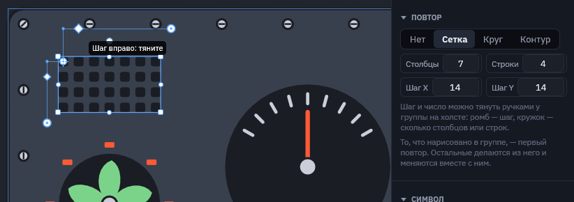
- Как сделать. Выберите объект. В панели свойств в разделе «Повтор» три кнопки: «Сеткой», «По кругу», «Вдоль контура». Объект ляжет в новую группу и останется на месте, группа станет выделенной. У обычной группы в том же разделе стоит переключатель «Нет / Сетка / Круг / Контур»: повторяется она сама, со всем, что в ней лежит.
- Сетка. В панели — столбцы, строки и шаг по X и по Y. На холсте у выделенной группы над первым объектом и слева от него идут линии с ручками; верхняя стоит выше ручки поворота рамки. Ромб стоит над вторым столбцом (и у второй строки): потяните его, и поменяется шаг. Кружок стоит за последним столбцом (и под последней строкой): потяните его дальше, и столбцы добавятся, обратно — уберутся. Шаг округляется до целого, с Ctrl — до десятой. Одно перетаскивание — один шаг отмены.
- Круг. В панели — число повторов, дуга в градусах и флажок «Не поворачивать повторы». Центр круга — опорная точка группы: нажмите Y и перетащите её метку, повторы разойдутся вокруг нового центра. Поворот самой группы крутит всё кольцо. Если у группы ещё нет опорной точки, а её объекты стоят прямо на точке группы, переключатель «Круг» сам ставит центр под ними, как кнопка «По кругу»: иначе повторы повернулись бы на месте.
- Вдоль контура. Кнопка берёт фигуру, на которой лежит объект, а если такой нет, ближайшую. В панели — список «Контур» со всеми фигурами сцены, число повторов, отступ «Внутрь» и флажок «Не поворачивать повторы». Место такой группы задаёт контур, поэтому двигать и поворачивать её редактор не даёт и пишет об этом в строке состояния. Общей рамки с ручками у неё нет: у выделенной группы обведён каждый повтор. Двигайте, растягивайте и скругляйте сам контур: повторы пойдут следом.
- Правка первого повтора. Двойной щелчок по объекту входит в группу, как в обычную. Всё, что вы делаете с написанными в ней объектами, сразу видно во всех повторах.
- Один повтор отдельно. Щелчок по объекту любого другого повтора выбирает его, как объект цикла: сдвиг и другие правки пишутся в блок
overrideи остаются только у него. В разделе «Повтор» у такого объекта есть кнопка «К группе повтора». - Меньше повторов. Когда повторов становится меньше или вид повтора меняется, ключи анимации и правки
overrideубранных повторов уходят вместе с ними. Строка состояния говорит об этом, Ctrl+Z возвращает всё одним шагом. - Снять повтор. Положение «Нет» в переключателе: группа снова обычная, в ней остаётся первый набор объектов.
- Повтор, записанный именами или формулами (
repeat grid n 2 step {w + 4}), редактор показывает, но не переписывает: его меняют в скрипте.
Работа внутри группы
Двойной щелчок по объекту, который лежит в группе, входит в эту группу. Пока вы внутри, остальной рисунок приглушён и до него не дотянуться: щелчок по нему ничего не выбирает, рамка и Ctrl+A берут только объекты группы. Так можно править деталь в тесном месте и не задеть соседей.
- Где вы. Над холстом слева стоит путь: холст › внешняя группа › текущая. Щелчок по имени выходит до этого уровня.
- Глубже. Входите в ближайшую группу объекта, по которому щёлкнули. Если нужна группа снаружи, щёлкните её имя в пути или нажмите Esc.
- Выход. Esc выходит на уровень выше и выделяет группу, из которой вышли. Двойной щелчок по пустому месту выходит совсем.
- Контур в группе. Первый двойной щелчок входит в группу, второй открывает точки контура. Enter открывает точки выделенного контура сразу.
- Новые объекты. Фигура, контур пера и вставленная копия записываются в группу, в которой вы находитесь, и встают там, где вы их поставили.
- Другие входы. Правый клик по объекту на холсте или по группе в «Слоях»: «Войти в группу». В «Слоях» объекты снаружи тоже приглушены; щелчок по такому слою выбирает его и выходит из группы.
Вход в группу ничего не пишет в файл: это режим редактора. Приглушение видно только на холсте, в экспорт и в игру оно не попадает.
Ctrl+D у объекта группы оставляет копию в той же группе, рядом с оригиналом.
Правка символа через копию
Двойной щелчок по копии символа входит в неё так же, как в группу. В «Рисовании» вы при этом правите сам символ: всё, что вы меняете внутри, записывается в блок symbol и сразу меняется во всех его копиях.
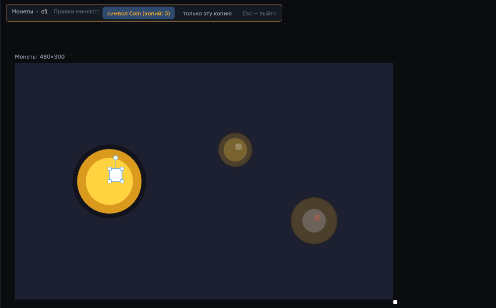
- Что меняет символ. Место, размер, поворот, цвет, обводка, эффекты и стиль объекта, точки контура, имя слоя, порядок слоёв, группировка, удаление. Новая фигура, контур пера, вставка и Ctrl+D пишутся в символ и появляются во всех копиях.
- Полоса над холстом показывает путь, а за ним «Правки меняют: символ Имя (копий: N) / только эту копию». Второе положение возвращает прежнее поведение: правка пишется в блок
overrideи остаётся у этой копии. Выбор действует, пока вы внутри копии; при следующем входе снова правится символ. - Значение из параметра или формулы (
size {size},fill color) в символ не пишется: редактор откажется и объяснит это в строке состояния. Поменяйте параметр копии в панели свойств или формулу в скрипте, либо переключитесь на «только эту копию». - Своё у копии. Пока правится символ, копия показывает его как есть: её собственные правки из
overrideна это время не рисуются и возвращаются после выхода. Их список с возвратом по одной — в панели копии, раздел «Правки этой копии». - Удаление объекта символа убирает и его ключи анимации, и правки этого объекта у всех копий. Если на объект что-то ссылается, редактор сначала показывает окно «Удалить из символа …?»: по каждому холсту файла число копий, дорожки анимации с именами клипов, правки копий, связи (драйверы, слушатели машин) и варианты, которые его скрывают или показывают. «Удалить во всех копиях» убирает объект вместе со всем перечисленным на всех холстах одним шагом отмены, «Отмена» или Esc ничего не меняют. Объект, на который ничто не ссылается, удаляется сразу. При группировке ключи места у всех копий пересчитываются, движение остаётся прежним.
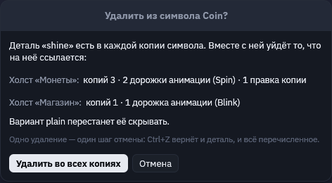
Окно перед удалением детали, на которую ссылаются анимации и правки копий на двух холстах. - В «Настройке» и «Анимации» внутри копии всё по-прежнему: ключи пишутся для объектов этой копии (
c1-face.x). - Без входа. Объект копии, выбранный одним щелчком на холсте или в «Слоях», без входа в копию, правится только для этой копии, как раньше.
- Другие входы. Кнопка «Править символ» в панели копии; правый клик по копии, «Войти в группу».
Режим ничего не добавляет в формат файла: меняются обычные строки блока symbol. Один шаг отмены возвращает символ и все копии.
Перо и правка точек
Инструмент P рисует свой контур:
- клик ставит угловую точку;
- клик с протяжкой ставит плавную точку и сразу вытягивает её ручки;
- клик по первой точке замыкает контур;
- Enter или двойной клик заканчивают открытую линию.
Чтобы поправить готовый контур, выберите его и нажмите Enter (или дважды кликните по нему, или нажмите «Редактировать точки» в панели):
- тяните точки и ручки. Точка, которую тянут, прилипает к остальным точкам контура, к узлам, краям и центрам других объектов и к направляющим: появляются те же розовые линии и ромб, что у объектов. Ctrl ставит её точно под курсор, Shift ведёт строго по горизонтали, вертикали или диагонали холста;
- ручки плавной точки стоят на одной прямой: потяните одну — вторая повернётся за ней и сохранит свою длину. У угла ручки независимы. Alt отпускает ручку и у плавной точки: она становится углом с ручками и остаётся им, пока вы не нажмёте «Плавный». Shift поворачивает ручку шагами по 15°;
- клик по линии добавляет точку;
- двойной клик по точке переключает её между угловой и плавной;
- Shift+клик добавляет точку к выделенным или убирает её; рамка, начатая на пустом месте, выделяет все точки внутри, а с Shift — добавляет их к уже выделенным. Ctrl+A выделяет все точки контура. Выделенные точки закрашены, вокруг главной из них — рамка: её числа показаны в панели;
- потяните любую выделенную точку — вместе с ней сдвинутся все выделенные, каждая со своими ручками. Стрелки двигают их на шаг, с Shift — на десять шагов; несколько нажатий подряд отменяются одним Ctrl+Z;
- у двух и более выделенных точек появляется рамка с тёмными ручками. Угловые и боковые ручки растягивают точки: противоположная сторона остаётся на месте, с Alt — середина, с Shift сохраняются пропорции. Кружок над рамкой поворачивает точки вокруг её середины, с Shift — шагами по 15°. Ручки кривых растягиваются и поворачиваются вместе со своими точками, поэтому половина круга остаётся половиной круга. Рамка идёт по осям самого контура, так что в повёрнутом объекте она повёрнута вместе с ним;
- кнопки выравнивания в разделе «Контур» ставят выделенные точки на одну линию (по левому краю, центру, правому краю, верху, середине, низу) или, от трёх точек, на равные шаги между крайними. Считается так, как видно на холсте, и в повёрнутом объекте тоже;
- Delete удаляет все выделенные точки. В части контура должно остаться хотя бы две точки; если выделены все точки части, она удаляется целиком (например, отверстие).
В скрипте контур хранится как path … d "M … C … Z", в том же формате, что и SVG.
Сложные контуры и отверстия
Один path может содержать несколько открытых и замкнутых частей: внешний край, отверстия, отдельные линии. В режиме точек видны узлы всех частей, и выделять их можно сразу в нескольких частях: рамка захватывает узлы двух отверстий, и они двигаются вместе. Клик по узлу выбирает его часть, а список «Часть» в разделе «Контур» позволяет перейти к ней из панели. Неизменённые части сохраняют свои команды и точность координат. Клик по кривой вставляет узел без изменения её формы; вставка с перетаскиванием записывается одним шагом Undo после отпускания мыши.
- X / Y — локальные координаты выбранного узла. Ручки сдвигаются вместе с ним.
- Ручка назад / ручка вперёд — числа у ручек кривой выбранного узла: смещение от узла (ΔX, ΔY) или длина и угол. У плавного узла вторая ручка поворачивается следом, чтобы остаться на одной прямой.
- Угол / Плавный / Симметричный — тип узла; подсвечен текущий. «Угол» убирает ручки. «Плавный» ставит ручки на одну прямую и сохраняет их длины; если ручек не было, добавляет их по направлению соседних узлов. «Симметричный» ещё и делает ручки одной длины. Кнопка действует на все выделенные узлы. Тип не хранится в файле: он читается из положения ручек, поэтому узел с ручками в разные стороны считается углом.
- Разорвать в узле — открыть замкнутую часть в выбранном месте либо разделить открытую часть на две. Геометрия кривых остаётся прежней.
- Соединить с… — выбрать конец другой открытой части. Совпадающие концы объединяются; между разными добавляется прямой сегмент.
- Открыть / замкнуть часть — изменить выбранную часть; при открытии сохраняется и бывший замыкающий сегмент.
- Обратить направление — изменить порядок обхода. При обычной заливке направление определяет отверстия; смена направления одной части может заполнить отверстие. При even-odd заливке направление не влияет на отверстия.
- Удалить часть — убрать её целиком, сохранив остальные. Последняя часть удаляется вместе с объектом после выхода из режима точек.
Изменение части, узла или ручки поддерживает Ctrl+Z и Ctrl+Shift+Z. Контуры, созданные циклом, по-прежнему редактируются в скрипте. Пример для практики: compound-paths.msc — знак с двумя отверстиями, раздельные линии, повёрнутая группа с отражением, скрытые и заблокированные слои.
Команды контура
В разделе «Контур» у любой фигуры, контура и текста есть команды, которые оставляют после себя обычный path. Картинка при этом не меняется, а каждая команда отменяется одним Ctrl+Z.
- Фигуру в контур — прямоугольник, эллипс, звезда или многоугольник записывается контуром той же формы, и его узлы можно править по Enter. Имя, место, поворот, заливка, обводка, эффекты и ключи анимации остаются. Если в клипах анимированы размер, скругление или число лучей, команда откажется и назовёт клип: у контура таких ключей нет.
- Обводку в контур — обводка становится залитым контуром: пунктир, форма концов и углов превращаются в его форму. У фигуры без заливки контуром становится она сама, с тем же именем. У фигуры с заливкой заливка остаётся, а контур обводки ложится отдельным объектом
имя_strokeсразу над ней, на том же месте. Градиент обводки становится градиентом заливки. Если фигура двигается в клипе, строка состояния напомнит сгруппировать её с новым контуром. - Смещение: «Наружу» и «Внутрь» — новый контур
имя_offset, который шире или уже исходного на заданное число единиц с каждой стороны. Исходный объект не меняется. Контур наружу ложится под ним, контур внутрь — поверх, с той же заливкой и обводкой. Галочка «Острые углы» оставляет углы острыми, без неё они скругляются. У открытой линии внутренней стороны нет: наружу получается полоса вокруг неё.
Контуры записываются в координатах самого объекта с точностью до сотых. Объекты, созданные циклом или символом, по-прежнему правятся в скрипте.
Команда откажется и напишет в строке состояния почему, если один застывший контур не может заменить объект: его гнут кости, у него морфинг, опорные формы или физика (для обводки и смещения), он стоит в раскладке или на шаре (новый объект рядом сдвинул бы соседей), это деталь интерфейса, которая тянется по размеру. Фигура с костями или морфингом в контур превращается: гнётся и меняет форму она как прежде. Слишком мелкий пунктир, из которого вышло бы больше двух тысяч штрихов, в контур не превращается.
Поиск и операции со слоями
Поиск в «Слоях» работает по имени и id без учёта регистра. Фильтры показывают контуры, скрытые или заблокированные объекты; скрытие и блокировка родительской группы тоже учитываются. Родители совпавших объектов остаются видны, а закрытые группы временно раскрываются для результатов. Очистка поиска и выбор «Все» возвращают прежнее сворачивание.
- Клик выбирает один слой; Ctrl+клик добавляет или убирает его.
- Shift+клик выбирает диапазон видимых строк от последнего обычного клика, Ctrl+Shift+клик добавляет диапазон. Выделение на холсте сохраняет прежнее поведение.
- Видимость, блокировка, удаление и «Выше / Ниже» в меню выбранного слоя действуют на весь набор. Каждая операция отменяется одним шагом. Удаление объекта из цикла по-прежнему требует правки скрипта; остальные выбранные объекты могут быть удалены.
- Перетаскивание выбранной строки переносит весь набор в прежнем порядке. Выбранный потомок переносится вместе с родителем один раз. Маркер показывает место вставки; отпускание мыши вне списка отменяет перенос.
При переносе между обычными группами сохраняются положение на холсте, поворот, масштаб, отражение и скос. Для групп, различающихся только сдвигом, пересчитываются также ключи X/Y. Цветовые эффекты, видимость, прозрачность и маска новой родительской группы применяются к перенесённым детям как обычно.
Если перенос нельзя выполнить без изменения движения или привязок — например, из анимированной группы, через автоматическую раскладку, с формулой трансформации, костью или симуляцией — Motif отклоняет перенос целиком и объясняет причину в строке состояния. Перестановка внутри той же группы остаётся доступна. Запекание таких зависимостей и режим изоляции слоёв ещё предстоят.
Текст
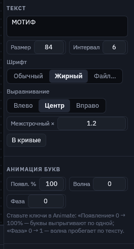
Инструмент T: клик по холсту ставит надпись «Текст», её содержимое правится в панели справа. Буквы — это настоящие контуры, поэтому к тексту применяется всё, что есть у фигур: градиенты, обводки, тени, размытие и маски.
- Шрифт. Встроенный IBM Plex Sans (обычный и жирный, латиница и кириллица) или свой TTF/OTF: кнопка «Файл…». Файл шрифта лучше держать рядом со сценой. Пары букв сдвигаются по кернингу шрифта (OpenType GPOS или старая таблица kern), как в браузере.
- Размер, интервал, выравнивание, межстрочный. Размер и межбуквенный интервал анимируются.
- Анимация букв. «Появление» 0 → 100% выпускает буквы по одной, с прыжком. «Волна» с «Фазой» пускает волну по тексту.
- «В кривые». Заменяет текст контуром: буквы можно править по точкам, а шрифт больше не нужен.
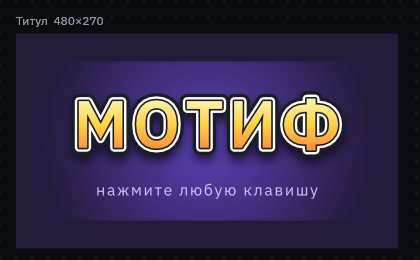
title.msc: градиент, три слоя обводки и тень.Направляющие, сетка и линейки
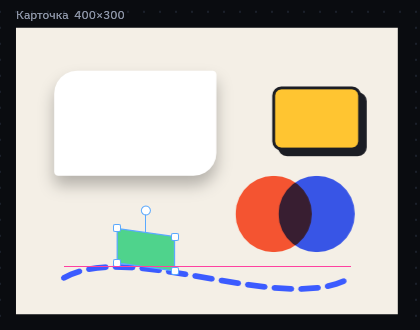
- Умные направляющие. Когда вы тянете объект, его края и центр прилипают к краям и центрам других объектов и артборда. То, что прилипло, встаёт точно на место, а не на ближайший шаг.
- Привязка точек. Точка пера, угол новой фигуры и ручка размера прилипают так же: к краям и центрам, а ещё к узлам контуров и центрам других фигур. На узле появляется розовый ромб. Новый прямоугольник, начатый у угла соседнего, встаёт к нему край в край. Галочка «Узлы и центры фигур» в меню кнопки с линейкой отключает узлы и оставляет линии.
- Подписи расстояний. Пока объект двигают или тянут за ручку размера, оранжевые линии с числами показывают расстояния от него до ближайших соседей слева, справа, сверху и снизу. Если объект лежит внутри другого (кнопка на панели), число показывает отступ до края панели; если соседа нет — до края холста. У курсора видно сдвиг (Δ), размер или угол. Галочка «Подписи расстояний» в меню кнопки с линейкой отключает их.
- Ctrl — без привязки. Пока клавиша зажата, точка или объект встают точно под курсор, мимо направляющих, узлов и шага. При перетаскивании объекта то же делает Alt, нажатый уже во время движения.
- Линейки сверху и слева показывают координаты артборда, а также положение курсора и выделения.
- Свои направляющие. Потяните мышью из верхней линейки на холст — получится горизонтальная голубая линия, из левой — вертикальная. Пока её тянут, рядом видно число, а сама линия прилипает к краям и центрам объектов (с Ctrl — нет). Линию можно взять снова на её линейке или на пустом месте холста и перенести; брошенная обратно на линейку, она исчезает. Объекты, углы новых фигур, ручки размера и точки пера прилипают к направляющим так же, как к краям других объектов. Когда ничего не выделено, в панели справа есть раздел «Направляющие»: точное число, замок и удаление. В скрипте это строки
guide x 120иguide y 80 locked; в рендер, экспорт и игру они не попадают. Галочка «Свои направляющие» в меню кнопки с линейкой прячет их и отключает. - Сетка включается клавишей G. Её шаг задаётся в меню кнопки с линейкой, там же есть кнопка «Шаг сдвига и размера = сетка».
- Пиксельная сетка в том же меню — границы пикселей картинки после экспорта, при масштабе из окна «Экспорт». Видна при сильном увеличении. Кнопка «Шаг = пиксель экспорта» двигает и меняет размер объектов целыми пикселями: края не размываются.
Пример для практики: precision.msc — панель из прямоугольников, звезда и кольцо с узлами, пунктирная волна для команд контура, повёрнутая, отражённая и перевёрнутая группы.
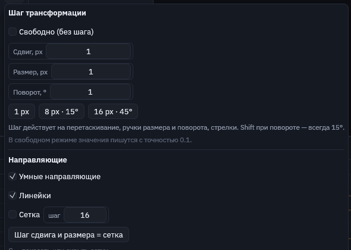
Холсты
Как в Illustrator: в одном файле можно держать несколько артбордов и работать над ними по очереди — кнопки, панели и иконки UI-набора, позы персонажа, варианты эффекта. Каждая строка artboard в скрипте открывает холст, который идёт до следующей такой строки. Всё, что выше первого холста, — общее для всех: поменяйте let-цвет наверху, и перекрасятся все холсты сразу.
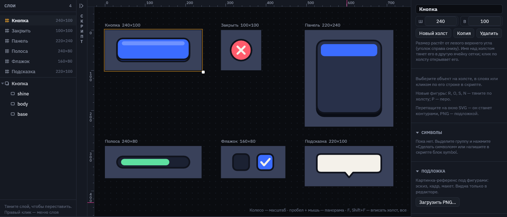
- Сетка. Холсты стоят сеткой с зазором, каждый от левого верхнего угла своей ячейки: столбец шириной в самый широкий холст, ряд высотой в самый высокий. Место в сетке пишется в строке холста:
cell 1 0— второй столбец, первый ряд. - Открыть холст — клик по нему на холсте или по его строке вверху панели слоёв. Скрипт, слои, таймлайн и машина состояний показывают открытый холст (и общее начало файла); остальные видны рядом.
- Переставить — тяните имя над холстом в другую ячейку. Холст, который там стоял, встаёт на освободившееся место, остальные подстраиваются.
- Размер — уголок справа снизу у открытого холста или поля «Ш» и «В» в правой панели. Холст растёт от левого верхнего угла.
- Новый холст, копия, удаление — кнопки в правой панели, когда ничего не выбрано, или правый клик по строке холста в слоях. Новый холст берёт размер, фон и режим открытого. Всё отменяется Ctrl+Z.
- F вписывает открытый холст в окно, Shift+F — все холсты.
- Экспорт — вверху окна «Экспорт» выбор «Открытый холст» или «Все», см. «Холсты при экспорте».
Подложка и импорт SVG
Подложка — это картинка-референс под фигурами: эскиз, кадр из игры или макет интерфейса. Добавьте её через «Файл → Подложка PNG или PSD…» или просто перетащите PNG или PSD на окно. Когда ничего не выбрано, в панели справа можно поменять её непрозрачность, положение и масштаб. В экспорт подложка не попадает.
Лист спрайтов. Если картинка — сетка кадров (например, анимация из другой игры или старый спрайт персонажа), подложка показывает по одному кадру. Кадры, разделённые прозрачными промежутками, Motif узнаёт сам, как только картинка загружена. Для сплошной полосы кадров нажмите «Лист спрайтов» в разделе «Подложка»: сетка угадывается по прозрачности или по квадратным кадрам, а колонки, ряды, число кадров и частоту можно поправить руками. В Animate кадры идут по времени таймлайна. Создайте анимацию той же длины и обводите кадр за кадром: на 0.25 с при 12 к/с стоит кадр 3. В Design виден кадр из поля «Кадр».
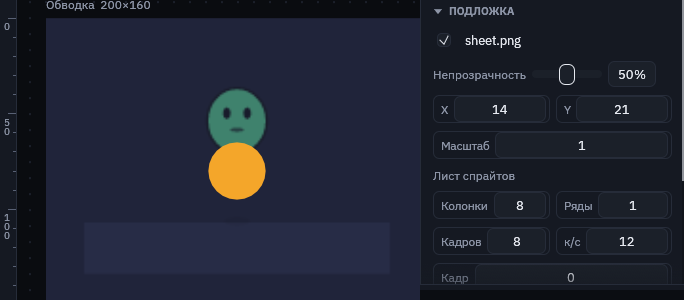
PSD слоями. Файл Photoshop (PSD или PSB) подложка собирает из слоёв сама: с их непрозрачностью, режимами наложения, обтравочными масками, масками слоя и группами. Под «Масштабом» появляется список слоёв, как в Photoshop: сверху вниз, группы с отступом. Галочка включает и выключает слой или целую группу, слои выключенной группы показаны серым. Так эскиз обводится по частям: спрятать цвет и заметки, оставить контур, потом наоборот. Сам PSD не меняется — в скрипт пишется, что спрятано и что показано вопреки файлу: hide "Цвет" show "Сетка". «Как в файле» убирает эти правки. Слои ищутся по имени, так что одноимённые слои включаются вместе. Эффекты слоя, корректирующие и текстовые слои не перерисовываются: текст и смарт-объекты видны такими, какими Photoshop их сохранил. Файл в CMYK или 32 бита на канал сохраните копией в RGB, 8 или 16 бит. Поменяли PSD в Photoshop — подложка обновится сама.
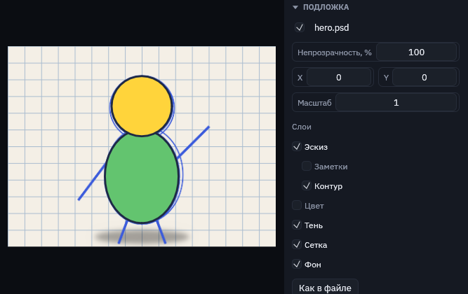
Импорт SVG. «Файл → Импорт SVG…» или SVG, перетащенный на окно. Каждая фигура файла станет контуром path внутри новой группы, с заливкой, градиентом, обводкой и прозрачностью. Текст в SVG перед импортом нужно перевести в кривые.
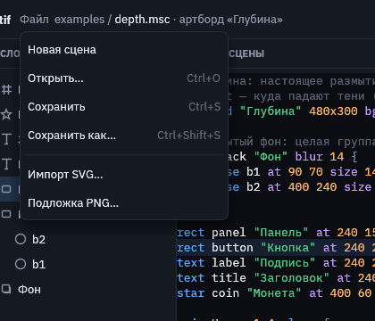
Холст и клавиши
| Клавиши | Действие |
|---|---|
| Колесо мыши | Масштаб холста |
| Пробел + мышь, H | Сдвиг холста |
| F, Shift+F | Вписать открытый холст или все холсты в окно |
| Tab | Переключить Design / Animate |
| Пробел | Пуск и пауза анимации |
| , . | Кадр назад / вперёд |
| K | Ключи на позицию, поворот и масштаб выделенного |
| Ctrl+Z | Отменить. Ctrl+Shift+Z или Ctrl+Y — повторить |
| Ctrl+S, Ctrl+O | Сохранить, открыть |
| Ctrl+G | Сгруппировать. Ctrl+Shift+G — разгруппировать |
| Ctrl+], Ctrl+[ | На шаг выше или ниже соседей |
| Ctrl+E | Свернуть или развернуть скрипт |
| F1 | Шпаргалка по синтаксису |
Полный список всегда под кнопкой «?» в правом верхнем углу редактора.